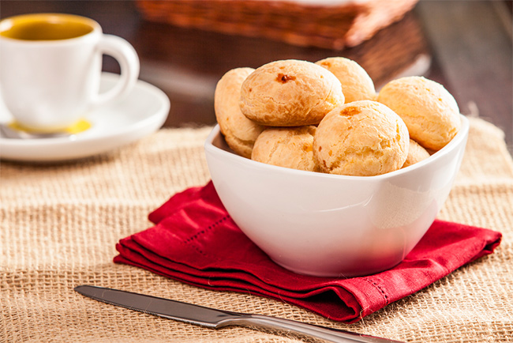

Minas Gerais

Pão de queijo é um dos principais símbolos da culinária de Minas Gerais, sendo amplamente reconhecido como patrimônio gastronômico brasileiro. Sua origem remonta ao período colonial, entre os séculos XVIII e XIX, nas fazendas mineiras, onde a escassez de farinha de trigo — produto importado e de difícil acesso — levou à utilização do polvilho, derivado da mandioca, como base para a produção de alimentos. Inicialmente, a receita era simples, porém, com o desenvolvimento da pecuária leiteira na região, ingredientes como leite, ovos e queijos locais, especialmente o queijo minas, foram incorporados, resultando em uma massa elástica, de sabor marcante e textura característica, crocante por fora e macia por dentro. Ao longo do tempo, o pão de queijo ultrapassou as fronteiras regionais e se consolidou em todo o território nacional, sendo consumido em diferentes ocasiões, especialmente no café da manhã e em lanches. Dessa forma, além de seu valor alimentar, o pão de queijo representa um importante elemento da identidade cultural e histórica de Minas Gerais.